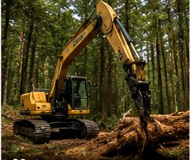
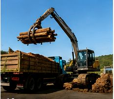
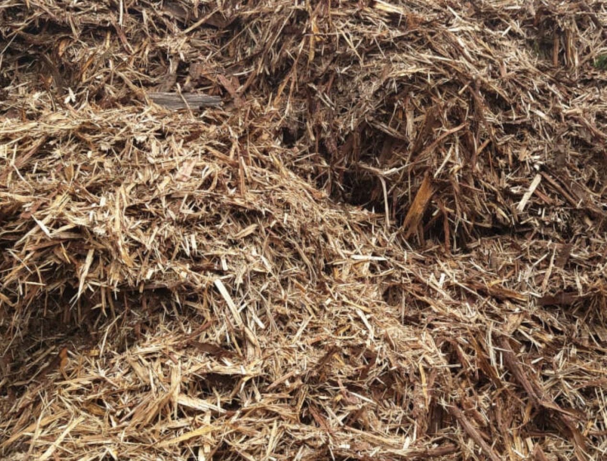
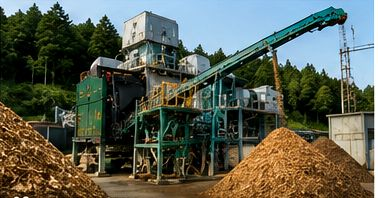
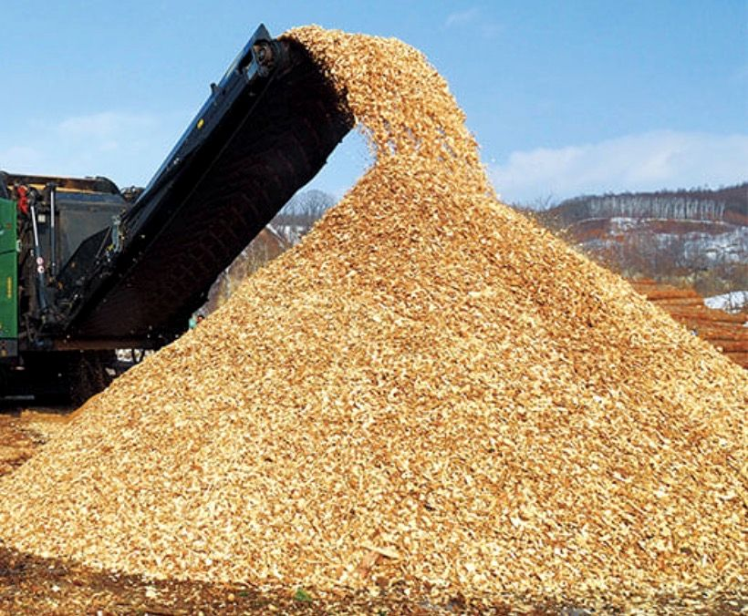
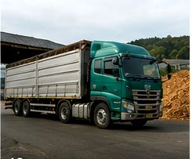

森林整備
山林整備・搬出作業
管理不足となっていた山林を整備し、伐採木を搬出して資源活用へつなげた事例です。
対応地域広島県内
 株式会社ClearthForest Resource Company
株式会社ClearthForest Resource Company
WORKS
森林整備、木材リサイクル、木質チップ製造などの施工・対応事例を掲載しています。

PROJECTS
森林整備から木材の再資源化、木質チップ製造・燃料供給まで、Clearthが対応した事例をご紹介します。
掲載写真は対応内容を紹介するイメージ画像です。施工前後の比較写真ではありません。


管理不足となっていた山林を整備し、伐採木を搬出して資源活用へつなげた事例です。
対応地域広島県内


木材廃棄物を受け入れ、一次破砕と選別を行い、木質チップ製造へつなげた事例です。
対応地域広島県内


製造した木質チップを燃料用途に合わせて供給した事例です。数量や条件は個別にご相談ください。
対応地域中国地方